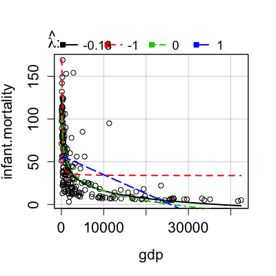

invTranPlot(x, ...) invTranPlot(x, data, subset, na.action, ...) invTranPlot(x, y, lambda = c(-1, 0, 1), robust = FALSE, lty.lines = rep(c("solid", "dashed", "dotdash", "longdash", "twodash"), length = 1 + length(lambda)), lwd.lines = 2, col = palette()[1], col.lines = palette(), xlab = deparse(substitute(x)), ylab = deparse(substitute(y)), family = "bcPower", optimal = TRUE, key = "auto", id.method = "x", labels, id.n = if (id.method[1] == "identify") Inf else 0, id.cex = 1, id.col = palette()[1], grid = TRUE, ...) invTranEstimate(x, y, family = "bcPower", confidence = 0.95, robust = FALSE)
lm, select a subset of the caseslm, the action for missing dataFALSE. "bcPower",
"yjPower", or a user-defined family.FALSE, or if robust=TRUE,
no interval is returned.pch argument, rather than colors.palette"auto", in which case a legend is added to
the plot, either above the top marign or in the bottom right or top right corner.
Set to NULL to suppress the legend.id.n=0 for labeling no points. See
showLabels for details of these arguments.
pch.invTranPlot
draws a two-dimensional scatterplot of Y versus
X, along with the OLS
fit from the regression of Y on
(Y^(lam)-1)/lam. invTranEstimate
finds the nonlinear least squares estimate of lambda and its
standard error.
invTranPlot
plots a graph and returns a data frame with lam in the
first column, and the residual sum of squares from the regression
for that lam in the second column.
invTranEstimate returns a list with elements lambda for the
estimate, se for its standard error, and RSS, the minimum
value of the residual sum of squares.
Fox, J. and Weisberg, S. (2011) An R Companion to Applied Regression, Second Edition, Sage.
Pendergast, L, and Sheather, S. (in press). On sensitivity of response plot estimation of a robust estimation approach. Scandinavian Journal of Statistics.
Weisberg, S. (2005) Applied Linear Regression, Third Edition. Wiley.

lambda RSS 1 -0.1253 137892 2 -1.0000 218540 3 0.0000 140162 4 1.0000 210914$lambda [1] -0.1253 $lowerCI [1] -0.2198 $upperCI [1] -0.02825